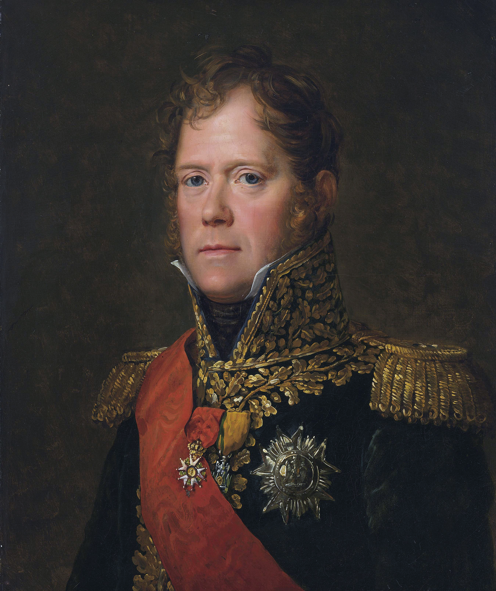
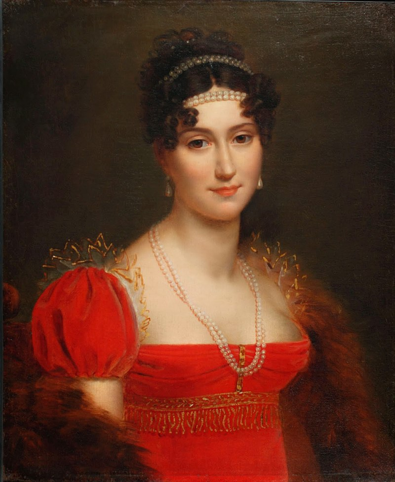
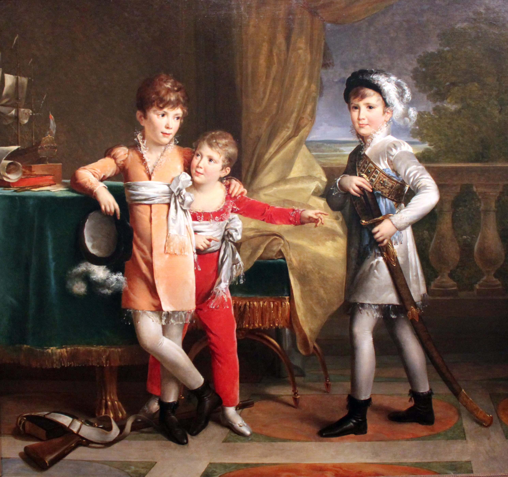
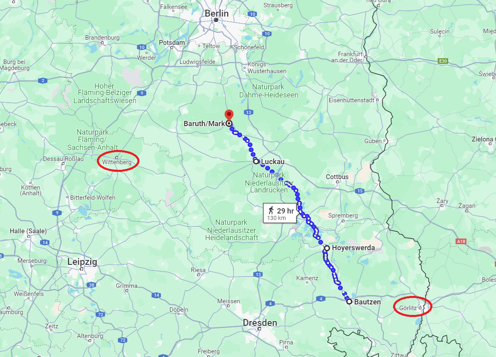

덴너비츠 전투 (1) - 러시아 땅의 마지막 프랑스인
게시: 2024-07-08T06:30:13+09:00
결국 나폴레옹은 베를린으로 향하지 못합니다. 만약 막도날이 바우첸까지도 블뤼허에게 내준다면, 자신이 북쪽 베를린 원정을 간 사이 드레스덴까지도 블뤼허의 위협에 놓일 수 있기 때문이었습니다. 원래 나폴레옹의 작전은 도시와 요새에 연연해하는 스타일이 아니었고 어디까지나 적의 주력 부대를 격파하는 것에 중점을 두었습니다. 그러나 드레스덴은 이야기가 좀 달랐습니다. 이 곳은 연합군의 3개 방면군과 대치하는 중심 거점이자 보급창 역할을 하는 곳일 뿐만 아니라, 당장 주전장이 된 주요 동맹국 작센의 수도였습니다. 여기를 잃으면 통신선과 보급선이 모두 끊어질 뿐만 아니라 이 일대에 축적된 많은 군수 물자와 함께 동맹국까지 잃어버릴 가능성이 컸습니다. 9월 2일, 나폴레옹은 자신 대신 그랑 다르메의 2인자를 베를린 방면군으로 보내기로 합니다. 마세나가 은퇴하고 술트는 스페인 방면에서 싸우고 있는 마당에 그랑 다르메의 2인자라고 할 만한 사람은 바로 나폴레옹 본인이 '용자들 중의 용자' (le Brave des braves)라고 불렀던 네(Michel Ney)였습니다. 문제는 과연 네가 그 정도의 그릇이 되는 인물인가 하는 점이었습니다.

('용자들 중의 용자'라는 것은 나폴레옹이 인위적으로 붙여준 별명이라서 아마 병사들이 자기들 사이에서 네를 그렇게 부르지 않았을 것입니다. 그의 진짜 별명은 'le Rougeaud' (르 루조, 얼굴이 시뻘건 사람)이었습니다.)
네는 통장이 집안 출신으로 나폴레옹과 동갑이었는데, 나폴레옹이 황제가 되기 이전에는 나폴레옹 밑에서 복무한 경력이 거의 없는데도 불구하고 1804년 최초로 원수의 반열에 오른 14인 중 한 명이었습니다. 그러니까 원래부터 실력은 있는 인물이라는 이야기지요. 혹자는 모로 밑에서 복무했던 네가 모로와 연관된 인물이라면 일단 꺼렸던 나폴레옹에게 중용된 이유가 그의 와이프 덕분이라고 주장하기도 합니다. 1802년 네와 결혼한 아글라에 오귀에(Aglaé Auguié)는 나폴레옹의 부인인 조세핀 및 그 의붓딸 오르탕스와 매우 친한 사이였거든요.

(네의 부인인 아글라에 오귀에(Aglaé Auguié)입니다. 전해지는 바에 따르면 1815년 12월에 네가 처형된 이후, 아글라에는 역시 나폴레옹의 부하 장군이었던 루이 줄 (Marie Louis Jules d'Y de Résigny)과 비밀 결혼을 했다고 합니다. 루이 줄도 나폴레옹파로서 1816년까지 말타 섬에 투옥된 바 있었습니다.)

(네와 아글라에 사이에는 4명의 아들이 있었습니다. 그 중 맏아들 Napoléon Joseph Ney은 아버지의 작위 중 모스크바 대공을 물려 받아 제2대 prince de la Moskowa가 되었고, 둘째 Michel Louis Félix Ney는 엘힝겐 공작을 물려 받아 제2대 duc d'Elchingen가 되었습니다. 첫째는 정치인이 되었고 둘째는 군인이 되었는데, 둘째는 1846년 크림 전쟁에 참전하여 세바스토폴 포위 작전을 벌이는 도중 콜레라에 걸려 병사했습니다. 위 그림은 그의 아들들 중 가장 어린 네째를 뺀 삼형제입니다.) 그런데 네의 전적을 보면 다부처럼 결정적인 공로가 있는 것도 아니고, 마세나처럼 꾸준하고 안정적인 전과를 올린 것도 아니었습니다. 오히려 그는 나폴레옹의 명령을 꾸준히 어기고 잘못 수행하는 경향을 보여주었습니다. 가령 1807년 2월, 그야말로 악전고투였던 아일라우 전투에 이르게 된 계기가 바로 네의 명령 불복종 때문이었습니다. 당시 폴란드에서 러시아군과 대치하고 있던 나폴레옹은 각 군단에게 겨울 숙영지를 할당해주면서, 무슨 일이 있어도 명령없이 지정 구역을 이탈하지 말 것을 지시했습니다. 그러나 할당받은 숙영지가 너무 척박하여 부하들이 먹을 것을 제대로 구하지 못하자 네는 자신에게 할당된 구역을 이탈하여 동프로이센 지역으로 제멋대로 이동해버렸지요. 덕분에 프랑스군의 좌익을 기습하려던 러시아군의 시도가 우연찮게 무산되기는 했지만, 그런 명령 불복종이 과히 잘한 일이라고 할 수는 없었습니다. 뿐만 아니라 1808년 스페인 전선에서 네는 상관인 마세나와 불화를 일으키는 등 나폴레옹에게 적지 않은 골치거리를 안겨주었습니다. 멀리 과거까지 갈 것도 없습니다. 바로 직전인 바우첸 전투에서 나폴레옹이 연합군 격멸에 실패한 것은 좌익으로 크게 우회하여 연합군의 퇴로를 끊어야 했던 네가 나폴레옹이 의도한 작전 계획을 잘못 이해했기 때문이었습니다. 그럼에도 불구하고 나폴레옹이 이렇게 번번히 네를 믿고 쓰는 원탑으로 썼던 것에는 이유가 있었습니다. 먼저, 불과 반년 전인 모스크바 후퇴 작전 때 후위를 맡았던 네가 보여준 헌신과 투지가 너무나 인상적이었습니다. 극한의 고난과 스트레스 속에서 믿었던 다부마저 제 역할을 못하고 무너지는 와중에, 끝까지 후위를 지켜냈던 네는 위기에 강한 남자였던 것입니다.

(네는 1812년 12월, 네만 강 위를 가로지르는 코브노의 다리를 건너 후퇴한 마지막 프랑스군이자, 러시아군을 향해 발포한 마지막 프랑스군이었습니다. 그는 다리를 건너 폴란드 땅에 도착한 뒤 강 건너의 러시아군에게 마지막 총 한 방을 쏜 뒤, 빈 머스켓 소총을 얼어붙은 네만 강에 집어던지고는 뒤돌아서서 태연히 걸어갔다고 합니다. 이때가 바로 네의 리즈 시절이었습니다. 윗 그림은 Adolphe Yvon의 작품입니다.) 게다가, 나폴레옹 주변에는 의외로 인재가 많지 않았습니다. 란은 죽었고, 마세나는 은퇴했으며, 술트는 스페인에 있었고, 이미 나폴레옹과 의가 상했던 다부는 함부르크를 지키는 한직을 맡고 있었습니다. 나폴레옹이 유럽을 제패할 수 있었던 주요 이유 중 하나가 바로 인재였습니다. 그저 귀족의 아들로 태어났다는 이유만으로 군 지휘권을 받았던 무능한 적 지휘관들에 비해, 출생 신분에 상관없이 오로지 실력과 전공에 따라 지휘관을 뽑았던 것이 프랑스 혁명군의 승리를 가져왔던 것입니다. 그런데, 혁명이 변질되어 나폴레옹의 제국이 세워지고 지휘관이 되었던 여관집 아들 채소가게 아들 등이 공작과 대공의 작위를 받아 귀족이 된 이후 결국 기존 세습 왕조의 군대와 같은 문제를 앓기 시작했습니다. 나폴레옹의 부하 원수들에겐 이제 더 올라갈 지위가 없었고, 이미 많은 재산과 명예를 가진 상태였습니다. 그들은 이제 지긋지긋한 전쟁을 때려치우고 그동안 확보한 재산과 명예를 누리고 싶어 했습니다. 그러나 나폴레옹의 제국은 필연적으로 끊임없는 전쟁을 겪었습니다. 이제 부하 원수들은 전쟁을 혐오했고, 특히 파멸적이었던 러시아 원정 이후 그런 기색은 더욱 뚜렷해졌습니다.
가령 이제 네가 대체하게 될 베를린 방면군의 기존 사령관 우디노만 해도 1813년 봄부터 이런저런 부상을 핑계로 원정 작전에서 뺴달라고 청원을 했었습니다. 막도날 원수만 하더라도 블뤼허로부터 보버강과 카츠바흐강 일대를 그저 지키고만 있으라는 간단한 임무를 주면서 보버 방면군을 맡겼는데도, 그걸 말아먹고 후퇴했을 뿐만 아니라 나폴레옹에게 편지를 보내 '나에게 방면군 사령관은 무리이니 그 자리에서 해임하고 원래처럼 제11 군단장만 하게 해달라'라고 호소했고, 패배의 원인에 대해 부하 장교들과 병사들의 열의 부족탓을 하는 추한 모습까지 보여 주었습니다. 그런 와중에 계속 투지를 보여준 네 외에 더 적합한 인물을 찾기가 어려웠습니다. 이렇게 별다른 선택지가 없어서 임명된 네가 과연 나폴레옹의 주공세를 독자적으로 지휘할 수 있었을까요? 실은 나폴레옹도 네의 한계점에 대해서는 누구보다 잘 알고 있었을 것입니다. 그래서 나폴레옹은 재빨리 동쪽 막도날의 보버 방면군 상황을 추스리고나서, 자신이 직접 증원군을 이끌고 네의 베를린 방면군에 합류할 생각이었습니다. 그는 참모장 베르티에를 통해 9월 2일 네에게 보낸 편지 2통에서, 그가 원하는 작전 방향과 함께 나폴레옹 자신도 곧 그의 우익을 지원하기 위해 베를린과 괴를리츠(Görlitz)의 중간 지점인 루카우(Luckau)로 진격하겠다고 명시했습니다. 그 편지에서 나폴레옹은 자신이 9월 4일까지는 호이어스베르다(Hoyerswerda)에 사령부를 이동시킬 것이니 네는 9월 6일까지는 반드시 바루트(Baruth)에 도착할 수 있도록 9월 4일에는 베를린 방면군의 진격을 시작하라고 명시했습니다.

(당시 이미 괴를리츠는 블뤼허에게 점령당한 상태였고, 나폴레옹은 근위대를 이끌고 바우첸까지 직접 갔었습니다. 바우첸에서 호이어스베르다까지는 약 30km로서 최소 하루 이상, 거기서 다시 루카우까지는 약 70km 거리로서, 3일 정도 행군을 해야 하는 거리였습니다. 그러니 아무리 나폴레옹이 강행군을 했다고 하더라도 며칠 후 벌어질 덴너비츠 전투때까지 루카우까지 당도한다는 것은 결과적으로 불가능한 일이었습니다. 덴너비츠의 위치는 비텐베르크와 바루트의 중간 정도 지점입니다.) 이렇게 나폴레옹이 직접 근위대를 이끌고 지원해준다는 약속까지 받고, 베를린 방면군이 후퇴해 대기 중인 비텐베르크로 향하던 네의 마음은 가벼웠을까요? 최소한 나폴레옹은 지나치게 가볍게 생각했던 것이 분명합니다. 그는 위에서 언급한 9월 2일의 편지에서 네에게 '그대가 진격을 시작하면 그 코삭 떼거리와 오합지졸 국민방위군(landwehr) 무리들은 공포에 질려 후퇴할 것'이라고 자신만만하게 이야기했습니다. 하지만 비텐베르크에 도착하여 우디노와 인수인계를 할 때부터 네는 상황이 좋지 않음을 느꼈습니다. 뭐가 문제였을까요?
Source : The Life of Napoleon Bonaparte, by William Milligan Sloane Napoleon and the Struggle for Germany, by Leggiere, Michael V With Napoleon's Guns by Colonel Jean-Nicolas-Auguste Noël https://en.wikipedia.org/wiki/Battle_of_Dennewitz https://battlefieldanomalies.com/napoleonic-wars/the-battle-of-dennewitz https://fr.wikipedia.org/wiki/Michel_Louis_F%C3%A9lix_Ney https://fr.wikipedia.org/wiki/Michel_Ney https://en.wikipedia.org/wiki/Agla%C3%A9_Augui%C3%A9